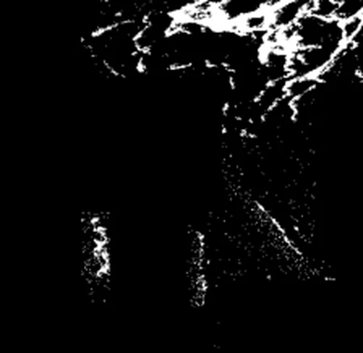
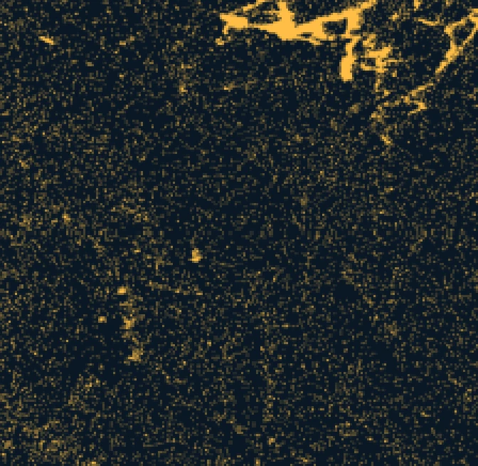
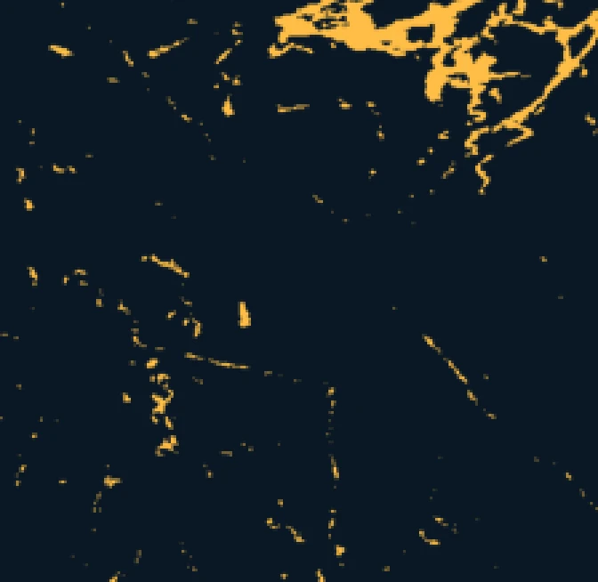

F1 = 0.35

F1 = 0.76
مشهد انسكاب نفطي بأبعاد 436 × 449 بكسل، والنفط باللون الكهرماني. من مخرجات دفتر KOSP الخاص بي: الكاشف نفسه بصيغته الخطية مقابل صيغة النواة مع MNF.
بحث الدكتوراه · جامعة جورج ميسون · 2015 إلى 2023
كشف الانسكابات النفطية المخفية في الصور فائقة الطيفية
قد تبدو طبقة النفط الرقيقة على الماء مطابقة تقريباً للماء من حولها، فتضيع الكواشف الخطية في الضوضاء. جمعت أطروحتي بين كواشف النواة غير الخطية وتحويل الحد الأدنى للضوضاء (MNF) لإبراز البقعة النفطية. بنيتُ أربعة كواشف قائمة على النواة واختبرت كلاً منها مقابل حقيقة أرضية مصنفة للانسكاب.
0.76قيمة F1 مع كاشف النواة و MNF، ارتفاعاً من 0.35
84%من بكسلات النفط تم كشفها، ارتفاعاً من 28%
4كواشف نواة، جميعها مفتوحة المصدر على GitHub
وخلال ذلك عملتُ في مشروعين لهيئة المسح الجيولوجي الأمريكية (USGS) لرسم الخرائط فائقة الطيفية في كولورادو وألاسكا، وشاركتُ في تدريس مقرر دراسات عليا في تعلم الآلة لمعالجة الصور.
اقرأ القصة كاملة: كيف وجدتُ النفط ←